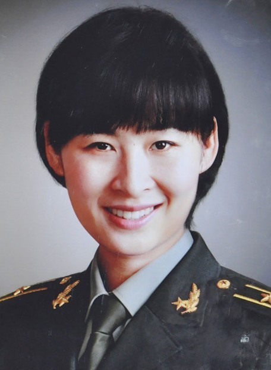

刘洋
刘洋，汉族，1978年10月生，河南林州人，1997年8月参加工作，2001年5月加入中国共产党，清华大学社会学专业毕业，研究生学历，博士学位，工程师。 现任全国妇联副主席（兼），解放军航天员大队航天员。
现任全国妇联副主席（兼），解放军航天员大队航天员
1人物经历
1978年10月6日生于河南省郑州，祖籍河南省安阳市林州市。
1985~1991年，就读于郑州市管城回族区实验小学。1991~1994年，就读于郑州市第三中学。1994~1997年，就读郑州十一中，担任班上团支书。
1997年毕业于郑州十一中，后参军，以超过当年地方重点院校录取线31分的高分考入空军长春飞行学院，成为一名女飞行员，也是建国以来，空军在河南招收的首批女飞行员之一。
2001年毕业分配至广空航空兵某师，现已飞行12年。
2010年，从15名候选人中脱颖而出，正式成为我国第二批航天员，并开始接受基础理论、航天环境适应性、航天专业技术、飞行程序与任务模拟训练等8大类几十个科目的航天员训练。
2012年3月，根据最终考核结果，刘洋入选神九乘组，代号03，主要负责空间医学实验的管理。
2012年6月12日，媒体报道，刘洋和来自山东烟台的王亚平成为中国首批女航天员热门人选。
2012年6月15日下午，中国载人航天工程指挥部宣布，男航天员景海鹏、刘旺和女航天员刘洋，将组成飞行乘组，执行神九与天宫一号载人交会对接任务。刘洋主要是在执行手控交会对接的时候进行监视、支持。除此之外，刘洋在长达十三天的飞行任务中还承担科学实验任务。
2013年2月1日，刘洋当选为2012中华儿女年度人物。
2人物评论
选拔刘洋的时候是我去面试的，有一个细节给我留下了很深刻的印象。当时，我们在他们部队进行面试的时候，有个环节是考她们的英语口语。我们先面试的是另一个女飞行员。她认为战友互相之间竞争是良性的，诚实是第一位的。（杨利伟评）
虽然我们三个人都属于说得少的性格，但是她的口才非常好，她经常演讲，知识非常渊博。刘洋也是一样为人非常谦和，人与人之间相处往往都是从生活、工作、学习的点点滴滴做起，从这么几个点就能看出刘洋的为人处事非常好。（景海鹏评）
刘洋给她的印象朴实较真而且大胆，刘洋的话很少，平日里衣着打扮很朴素，单从外表看，很是不起眼，做事情很是认真，在她的印象中，刘洋高中三年从未请过假，也从未迟到早退，纪律性非常强。（李风云评）
3社会任职
2016年8月30日，当选为全国妇联兼职副主席。